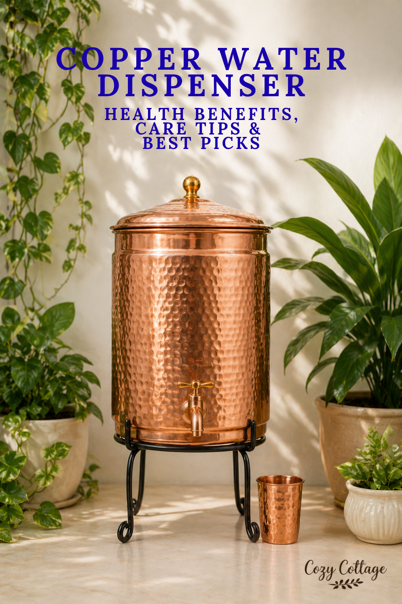

Copper water dispensers have become popular again because they combine traditional wellness practices with elegant kitchen décor. In India especially, storing water in copper vessels has roots in Ayurveda, where “Tamra Jal” (copper-infused water) is believed to support digestion and overall wellness.
How a Copper Water Dispenser Works?
A copper water dispenser slowly releases tiny amounts of copper ions into stored water. This happens naturally when water remains in the container for several hours.
nbspScientific studies suggest that copper has an oligodynamic effect, meaning it can damage or kill certain harmful microorganisms such as E. coli, Salmonella, and Vibrio cholerae.
Traditionally, people store water in a copper vessel overnight (6–8 hours) and drink it the next morning.
Copper dispensers are typically made from:
Pure copper
Hammered copper
Lacquer-coated copper
Copper with stainless steel lining
Potential Health Benefits of Copper Water
1. Antimicrobial PropertiesResearch shows that copper surfaces can reduce bacterial contamination in water. This is one of the most scientifically supported benefits.
2. Supports Normal Body Functions
Copper is an essential trace mineral involved in:
Iron absorption
Energy production
Formation of connective tissue
Immune system support
The body needs only small amounts of copper daily.
3. May Improve Digestion
Ayurvedic practices associate copper water with better digestion and metabolism. Some users report reduced bloating and improved gut comfort.
4. Eco-Friendly & Durable
Copper dispensers are reusable, long-lasting, and plastic-free.
5. Naturally Cool Water
Copper containers often keep water pleasantly cool without refrigeration.
Drawbacks & Risks of Copper Water Dispensers
1. Risk of Excess Copper IntakeToo much copper can cause:
Nausea
Vomiting
Stomach pain
Metallic taste
Diarrhea
2. Never Store Acidic Drinks
Do not store:
Lemon waterAcidic liquids react with copper and may create harmful compounds.
Vinegar drinks
Fruit juice
Soda
Buttermilk
3. Requires Regular Cleaning
Copper naturally oxidizes and darkens over time. Without cleaning, greenish or black tarnish may appear.
4. Some Copper Products Are Fake
Many cheap products are:
Copper-coated steelAlways check for:
Brass mixed with copper
Low-grade metal
Food-grade certification
Pure copper labeling
Weight and thickness
How to Maintain a Copper Water Dispenser
Daily CareEmpty leftover water dailyWeekly Cleaning
Rinse with normal water
Dry properly before refilling
Use one of these:
Lemon + salt pasteRub gently with a soft cloth, rinse thoroughly, and dry immediately. Important Tips:
Tamarind paste
Vinegar + salt solution
Avoid dishwashers.
Do not scrub with steel wool.
Store only plain drinking water.
Don’t keep water for multiple days continuously.
Where to Buy?
These days, things have changed a lot, and we can easily buy copper vessels online.Disclaimer: As an Amazon Associate, I earn from qualifying purchases.
1. P-TAL Copper Water Dispenser
Visit Amazon
Product Rating: ★★★★☆ (4.4)
Price: ₹13495
Capacity : 10 Litre
It comes with leakproof Brass Tap, Lid and a Stand.
2. SHANKAR & SONS Copper Water Dispenser
Visit Amazon
Product Rating: ★★★★☆ (4.0)
Price: ₹2499
Capacity : 5 Litres
It comes with Stand and 2 Copper Glasses
3. Artarium 100% Copper Water Dispenser
Visit Amazon
Product Rating: ★★★★☆ (4.5)
Price: ₹4999
Capacity : 8 Litres
This brand has unique designs in their store.
4. Copper-Master Hammered Water Dispenser
Visit Amazon
Product Rating: ★★★★☆ (4.0)
Price: ₹3735
Capacity : 5 Litres
It comes with one Copper Glass and a Stand.
5. Pure Copper Hammered Water Jug
Visit Amazon
Price: ₹1696
Capacity : 2 Litres